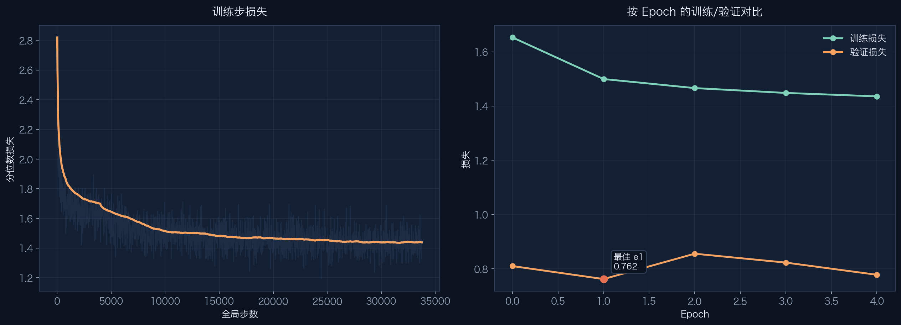
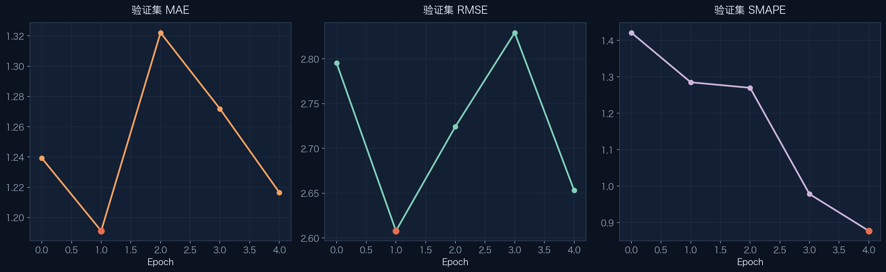
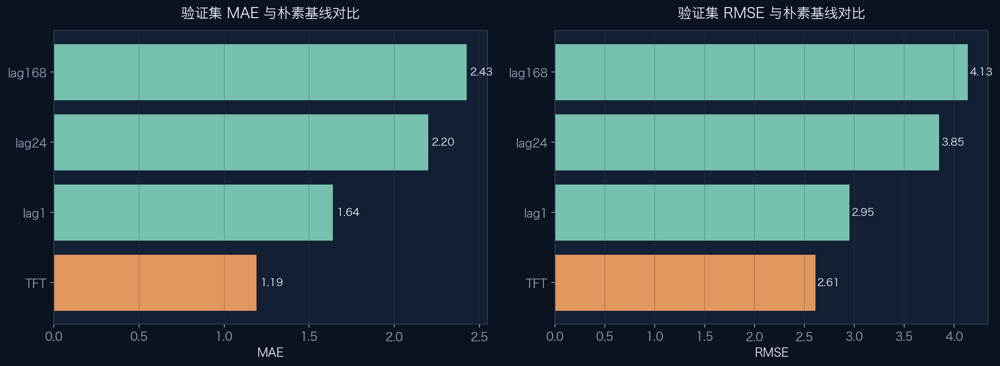
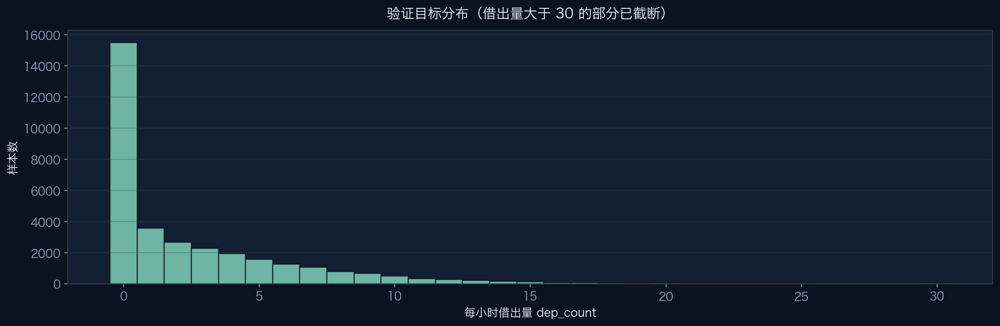
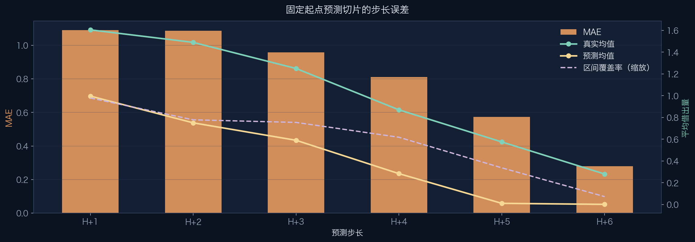
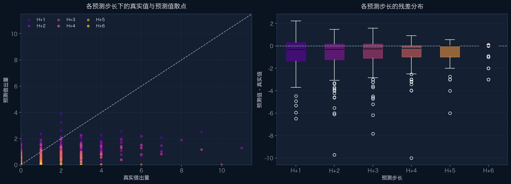
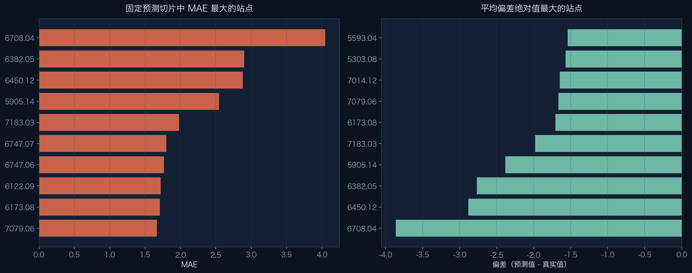
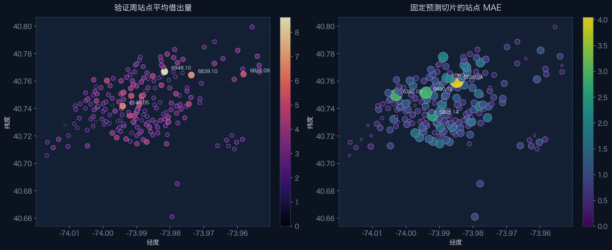
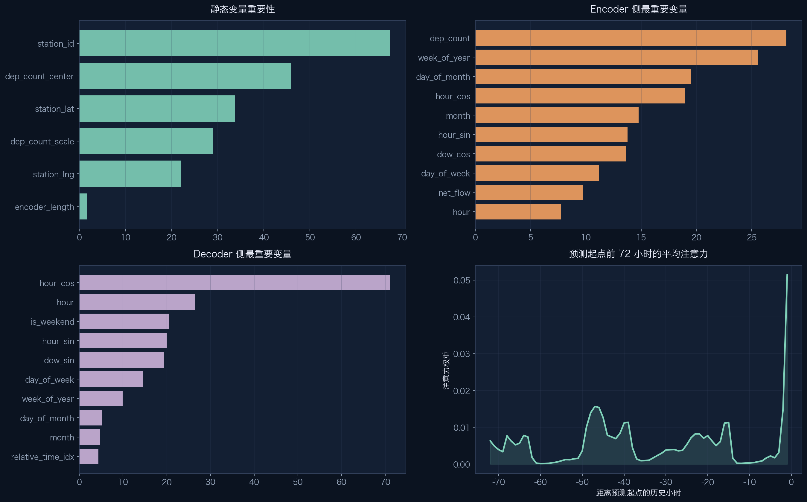
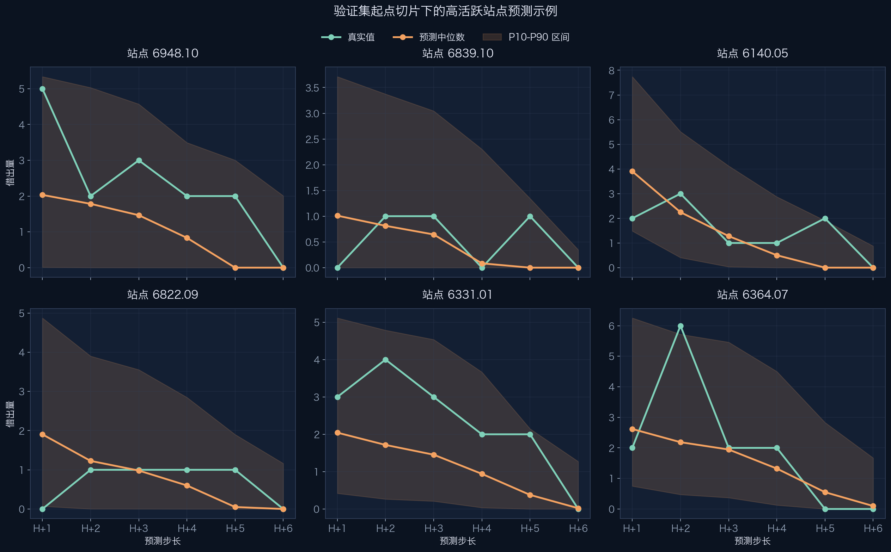

Citi Bike TFT 训练报告
citibike_tft_h64
这份报告总结了复制到本地的训练结果，最佳 checkpoint 为
best-epoch=01-val_loss=0.7623.ckpt。相较朴素的 lag1 基线，
模型把验证集 MAE 提升了 27.4%；同时这段验证窗口本身比较稀疏，
零值占比达到 46.1%。
最佳验证损失
0.762
最佳点在 epoch 1 · 最后一轮为 0.778
最佳验证 MAE
1.191
RMSE 2.608 · SMAPE 1.285
验证窗口
33,600
200 个站点 · 平均借出量 2.68
区间覆盖 / 宽度
36.8%
P10-P90 平均宽度 2.02 · 切片起点 time_idx=8636
训练走势
训练 step loss 下降得很快，验证损失则较早找到最佳点，随后一直在较窄范围内波动。
这更像是“快速收敛后进入平台期”，而不是“越训越坏”。

验证损失在 epoch 1 达到最低点，之后虽然没有继续刷新，但最后一轮也只比最佳点高
2.1%。
这次训练不需要跑满所有设定 epoch 就已经给出足够稳定的信号，说明当前配置在这个数据切分上收敛很快。
由于验证窗口零值很多，百分比误差会被严重扭曲，所以这份报告有意不把 MAPE 当成核心指标来展示。
验证指标
这里展示的是这次训练里最稳定、也最值得读的验证指标。对当前这个 holdout 来说，MAE 和 RMSE 的参考价值最高。


验证窗口特征
这段 holdout 周期比全量数据稀疏得多，所以必须结合分布背景来看误差。下面这组图展示了目标值的稀疏性，以及误差如何随预测步长变化。


校准与偏差
这一部分关注的不只是“平均来看准不准”，而是模型在站点层面能不能把幅度和偏差也一起对上。


固定预测切片中 MAE 最大的站点
| 站点 | MAE | 偏差 | 验证周均值 |
|---|---|---|---|
| 6708.04 | 4.044782 | -3.862027 | 2.053571 |
| 6382.05 | 2.900806 | -2.765374 | 2.053571 |
| 6450.12 | 2.882439 | -2.882439 | 4.744048 |
| 5905.14 | 2.544732 | -2.382924 | 5.011905 |
| 7183.03 | 1.980429 | -1.980426 | 2.130952 |
| 6747.07 | 1.801310 | -1.054260 | 1.672619 |
| 6747.06 | 1.767325 | -1.274658 | 3.071429 |
| 6122.09 | 1.721146 | -1.196025 | 2.791667 |
平均偏差绝对值最大的站点
| 站点 | 偏差 | MAE | 覆盖率 |
|---|---|---|---|
| 6708.04 | -3.862027 | 4.044782 | 0.333333 |
| 6450.12 | -2.882439 | 2.882439 | 0.500000 |
| 6382.05 | -2.765374 | 2.900806 | 0.166667 |
| 5905.14 | -2.382924 | 2.544732 | 0.333333 |
| 7183.03 | -1.980426 | 1.980429 | 0.333333 |
| 6173.08 | -1.707018 | 1.707018 | 0.500000 |
| 7079.06 | -1.664218 | 1.664218 | 0.166667 |
| 7014.12 | -1.648491 | 1.648542 | 0.333333 |
空间视角
把站点放回地图后，能更容易区分两件事：哪些地方在验证周本来就更忙，以及哪些地方在这次固定预测切片里依然很难拟合。

TFT 可解释性快照
这里用一页图浓缩了模型在固定验证切片上最依赖的信号：静态站点信息、encoder 侧历史特征、decoder 侧日历特征，以及最近一段历史上的注意力分布。

站点预测示例
这些例子挑的是验证周里最活跃的站点，并固定使用 holdout 起点的那一条 6 小时预测序列来展示。
